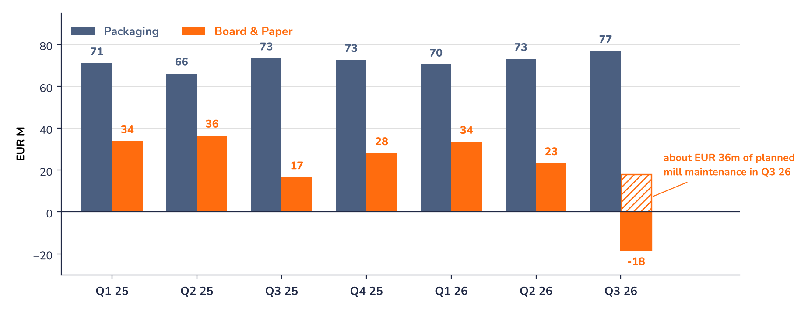

Packaging vs. Board & Paper: two markets moving apart
The third quarter, published four days before the deal, shows why a buyer wanted Packaging and why the market gives little value to Board & Paper.

Packaging keeps delivering
Packaging's quarterly EBITDA has held between EUR 66m and 77m through the downturn, and the third quarter of 2026 was its best in the period. Over nine months, Food & Premium lifted its EBITDA margin to 14.5% (+0.9 points excluding TANN) despite lower volumes, thanks to cost savings. Pharma & Healthcare grew EBITDA by 13% to EUR 68m, helped by customers making GLP-1 weight-loss drugs. Management says demand in Packaging is picking up.
Board & Paper: a third quarter hit from three sides
Strong price competition in an oversupplied market; energy, transport and chemicals costs pushed up by the conflict in the Middle East; and planned maintenance at two virgin-fibre mills, Kwidzyn and Kotkamills, which cost about EUR 36m. The division's EBITDA turned negative (EUR -18m). Without the maintenance it would have been around EUR +18m (Syz calculation), about the level of the same quarter of 2025 (EUR 17m).
- Prices: MM has implemented price increases since October to pass on higher costs.
- Orders: the average order backlog reached 183,000 tonnes over nine months, against 157,000 a year earlier, and mills ran at good capacity utilisation.
- Supply: overcapacity in Europe has been reduced by the exit of a competitor, and MM plans to buy the Arnsberg cartonboard mill, which it expects to bring synergies.
- Costs: the Fit-For-Future savings programme is partly offsetting cost pressure.
Management still expects sustained margin pressure in Board & Paper, so these signals support patience rather than a call on the timing of the recovery.